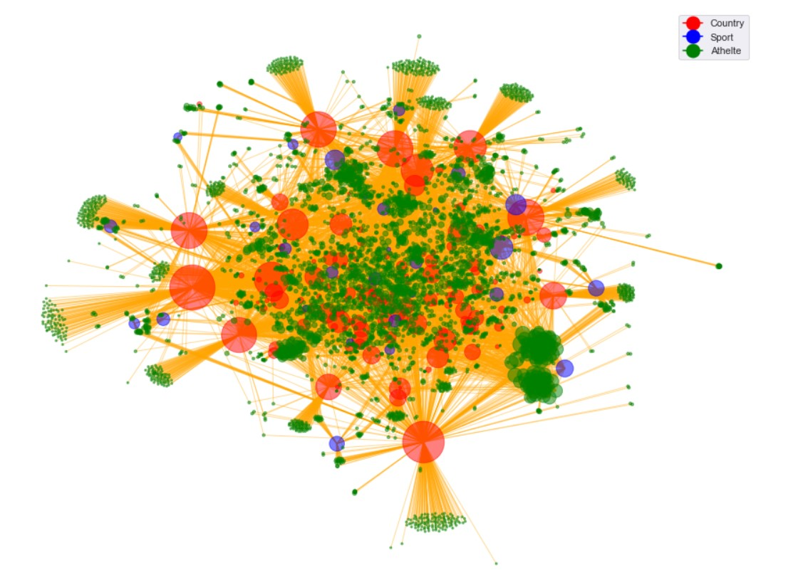
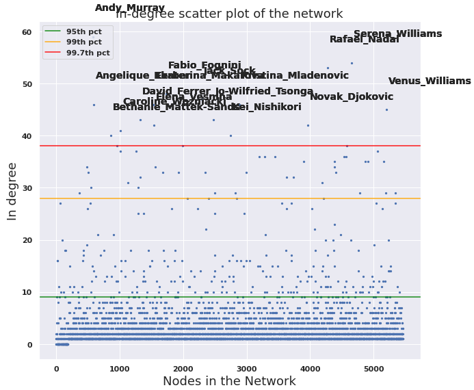

All of our analysis is based on datasets downloaded from Kaggle
and texts scraped from Wikipedia about Countries, Sports and Athletes participating at the Olympic Games in 2016.
Below is presented an exciting example of what a Wikipedia page of a random athlete participating at the Olympic Games in 2016 looks like.
This project has createed an Olympic Network of the Countries, Sports, and Athletes to see how they connect.
All the Wikipedia pages of Countries, Sports, and Athletes (if the athlete has a Wikipedia page) have been downloaded, where
these Wikipedia pages will act as nodes in the network and the links between the Wikipedia pages will act like links in the network.
A visualization of the network can be seen below.

Click on the example below for an interactive visualization of the network, and try play with the network yourself:
Cool right... But there are still much more to discover about this network, so please continue ♥
To understand a network, you need to start by investigating the basic statistics and structure. This will give you a nice understanding
of the type of network you are working with, and how the nodes are connected in the network. The Olympic Network is
a directed network, which means that a node, ex.
[Denmark]
links to
[Katja Salskov-Iversen],
but Katja does not link to Denmark. This implies one directed link between the two nodes.
The Olympic Network has 5.463 nodes and 16.306 links spread out amongst the Countries, sports and athletes.
This project investigates the properties of the nodes. Let's start by finding links in and out of each node, which is also called the node degree.
The average degree of the total Olympic network is 5,97. The average is sensitive to large in- and/or out-degrees. Therefore it is interesting to study the median
for the in- and out-degrees. The median is not sensitive to nodes with extreme degrees. The median for in-degree is 2, which tells us that most nodes have very few in-degrees.
For out-degree, the median is 0, which means that most of the nodes are not linking to other nodes.
OK, so the network has many nodes with a low degree and very few with a high degree. This corresponds to a power law and that the network has a hub-structure.
A set of nodes where almost every node or at least many of the nodes link to is called a hub. Thinking about it, for the Olympic Network this makes sense. The Countries
are all linking to all the athletes that are representing the country, which mean that all countries (espacially the big once at the Olympics), quickly become a hub.
This network structure is the main property in many real-world networks and it
is also called a Scale-free Network. By having this network structure knowledge, further analysis will be more interesting and hopefully more successful.
Scatter plot with high percentiles
In-Degree

The In-degrees have generally a lower number of degrees and is more randomly scattered.
95% of the nodes have less than 9 in-degrees. Only 0,03% of the nodes
have more than 38 in-degrees and these few nodes are all tennis players.
Scatter plot with high percentiles
Out-Degree
The out-degrees have few nodes with a large degree. The few nodes that are above the 99,7%
are mostly countries but also the sport athletics. The sport athletics has many participants
and therefore many out-degrees.